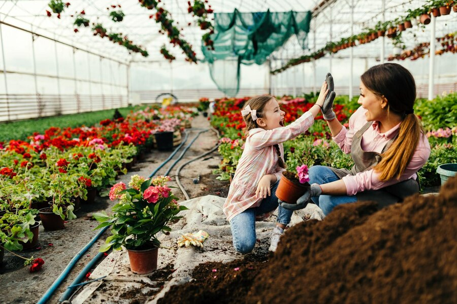
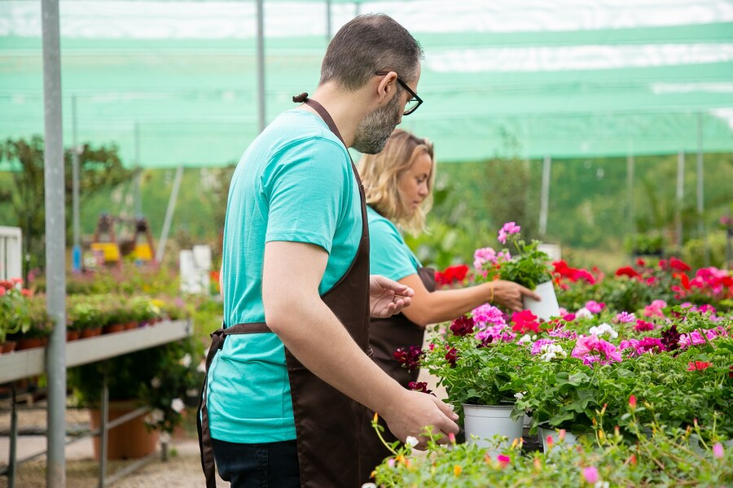
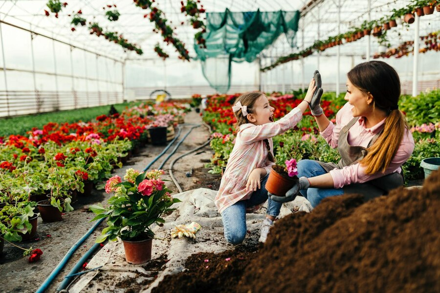
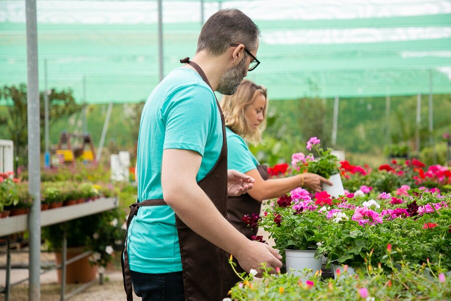

Plant Care Tips & Tricks
Why Plant Care is Essential
Caring for your plants ensures they thrive, enhance your living space, and purify the air around you. With the right techniques, your plants will grow lush and healthy, bringing joy to your home or garden.
Plant Care Basics
- Ensure your plants receive the correct amount of sunlight based on their species.
- Water your plants as needed—avoid overwatering to prevent root rot.
- Use quality soil and fertilize regularly for optimal growth.
- Prune dead leaves and stems to encourage new growth.
- Check for pests and treat them promptly with eco-friendly solutions.
Gallery: Healthy Plants
 


